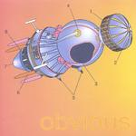

| Artist: | Obvious |
| Title: | Obvious |
| Label: | Tueb Records 0002 |
| Length(s): | 43 minutes |
| Year(s) of release: | 2000 |
| Month of review: | [02/2001] |
| 1) | Angel | 7.38 |
| 2) | More Bads | 4.20 |
| 3) | Me = Mc^2 | 2.30 |
| 4) | Flimflam Man | 4.13 |
| 5) | Motherless Child | 5.59 |
| 6) | Wax Into Water | 8.33 |
| 7) | Laika | 9.41 |
More Bads is the next one. Again, a somewhat spacey, introspective intro followed this time by some space guitar. The "vocals" on this track is a recorded monologue by ehm someone. Again, the prominence of the bass line gives the music a darkish feel, but the percussion keeps it lively. Not much of a song, more an exploration of sounds.
Acoustic guitar dominates the short ME=MC^2, a bit in the style, vocally mostly, of Lou Reed. That is until we come to the Beatlesque middle part. Slide guitar, mooing cows, Beatles' psychedelica, it's all here.
Flimflam Man opens in psychedelic fashion (think King Black Acid here (if you happen to know them)), willowy piece with sharp with some weird guitar playing. The rhythm section sounds rather modern on this one (even some record scratching here), the vocals are done in an intimate whispered fashion and melodically there are some Indian influences it seems. After three minutes or so, the music really starts to get going, because we get powerful chords, a cutting guitar solo and an almost industrial piece of noise for our ears.
Motherless Child opens with stereo effects. The song rather emotional sounding track with a reggae break in the middle. A heavy plodding track with reference to the opening song on the album.
The two longest tracks are still to come. The first of these is Wax Into Water, a slow moving track with like in a number of tracks earlier, a dark, spacey sound. The vocals are a bit less melodic and I would have hoped for something more distinctive. The music becomes a bit dreamier during the track, but soon after hells breaks loose again with heavy plodding drums (think Hawkwind here) and organic rock. Actually, after five minutes or so, the music still gives the impression of building up. The song ends with industrial sounding electronics.
The dog on the booklet is probably Laika, the dog to the first to fly into space (or the first mammal). The last song on the album is for her. The acoustic guitar dominates the opening some clear vocals. After the short vocal part, we begin a slow and easy spacey build-up with strumming acoustic guitar. The next vocals are for a female singer, these vocals are more melodic and the music becomes optimistically bouncy with someone humming along. The guitaristic finale completes the song.
Jurriaan Hage